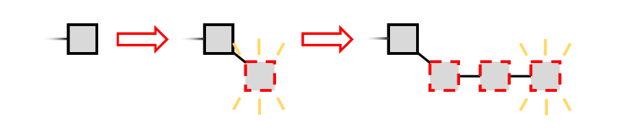
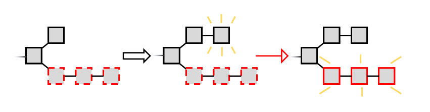
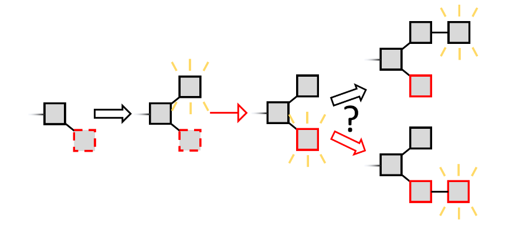
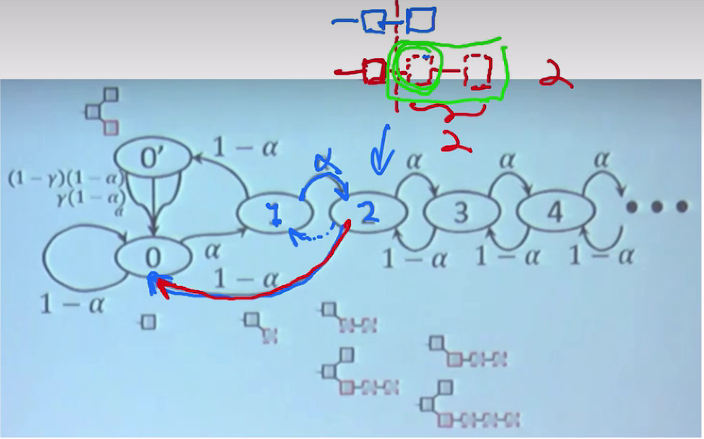
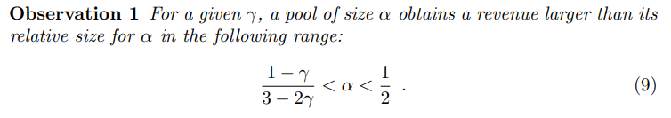

Introduction
工作量证明的区块链实现了一种形式的状态机复制（SMR）。但是因为区块链网络是开放的，这也意味着任何人都可以加入这个网络，系统通过激励参与者（矿工）来遵守协议。因此，不像经典的SMR协议，我们不仅需要限制恶意参与者的数量，还需要关心矿工是否真的被激励去遵循我们规定好的协议（Nakamoto’s style consensus）。矿工能否相对公平的获得收益是确保网络长期稳定运行的关键(Compatibility)——算力与收益成正比。
The Game
我们将系统描述成一个矿工们一起进行的游戏。游戏中的玩家们(miners)负责生成区块（blocks），游戏以轮数的方式进行。每一轮一个矿工生成区块，同时任何矿工能够发布它生成的区块。我们假设网络模型是同步的，所以所有矿工可以在新一轮游戏中收到上一轮被发布的消息。
根据规定的协议，每个矿工延申最长链；当有两个分叉拥有相同的长度时，矿工选择在他收到的第一个区块进行延申。
游戏中的每个玩家渴望最大化他们的收入。utility function的定义如下：sizeof(attacker’s blocks)/sizeof(main chain).
Bitcoin Mining Is Not Incentive Compatible
”Majority is not Enough: Bitcoin Mining is Vulnerable“这篇论文阐述了bitcoin网络并不是Compatibility的，矿工们可以通过自私挖矿的策略获得超过（自己算力/全网算力）的收益比例。
-
攻击者尽可能地形成一个长的secret branch（挖出以后不及时公布，并独自继续在自己的secret branch上贡献算力，相当于抢跑） 
-
在自己的secret branch将要失去主链地位时（one step behind），及时公布自己的secret branch，以维持自己的主链地位（最长链原则），从而自己可以获得收益，而在另一个短branch贡献的诚实矿工的算力被浪费了。 
The Risk of Selfish Mining
当攻击者的secret branch没有绝对的领导地位（没有足够的secret block储配以实现通过发布自己的secret block来使自己的链保持最长链的地位时）。它可能会需要承担一些风险，因为如果它选择隐藏自己的区块并成功基于自己的区块先计算出下一个区块以形成更长的链时，它将获得两个区块的奖励；反之，诚实的矿工基于另一条分支先计算出下一个区块时，自己的secret branch成为短链，此时它应该基于另一条branch进行下一个区块的计算（因为majority miners基于另一条branch进行计算，自己的算力总是落后的）此时它没有获得任何收益。

当然，攻击者仍然发布自己的区块故意地形成分叉，全网算力此时就分布在这两条分叉上，当有更多的算力在secret block上计算下一个区块，那么secret block就有更高的概率被包含在主链中，因为当下一个区块被生成时，另一条链根据最长链原则就被废弃；反之如果更多的算力在另一个block上计算下一个区块，那么另一个block就有更高的概率被废弃。所以为了提高secret block被包含在主链中的概率，攻击者需要尽可能的让全网的其他矿工在自己的secret block上进行下一个区块的计算。在Bitcoin网络中，诚实的矿工先看到哪一个新区快，就在这个新区快上进行下一个区块的计算，所以对于攻击者来说，它的策略应该是尽可能的让其他矿工先看到自己的区块。reachability = (sizeof(FirstLook)/sizeof(Honest Miners)，当reachability = 1时，攻击者一定可以使自己的secret block被包含在主链中，因为此时全网都基于secret block计算下一个区块。攻击者可以通过女巫攻击，在全网均匀分布足够数量的只用于传播secret block的零算力节点，并且当一发现有诚实矿工挖矿成功，就发布攻击者的secret block，那么我们可以使reachability近似为1。
State Machine With Transition Frequencies and Analysis Cuts
α: 攻击者算力
(1-α): 诚实矿工算力
γ: reachability
由于secret chain长度不领先时存在我们之前提到的race的情况，所以当secret chain从领先2个长度变为只领先1个长度时，我们及时公布所有secret blocks以保证收益，这也就是为什么状态机从状态2直接跳回状态0的原因。状态0’则是区块链处于诚实矿工的branch和攻击者branch的长度一样时的状态。从状态0‘到状态0有三种情况：
-
(1-γ)(1-α) 诚实矿工在诚实矿工的branch上计算出新区块的概率。
-
γ (1-α) 诚实矿工在攻击者的branch上计算出新区块的概率。
-
α 攻击者在攻击者的branch上计算出新区块的概率。

Evaluation and Robustness
Observation: 对于给定的γ，规模为α的池子获得的收入大于其相对规模α。在以下范围内：

Solution: 可以优化bitcoin协议使矿工随机选择基于哪一个分叉进行计算，降低reachability = 1/2。
Reference
[1] https://arxiv.org/pdf/1311.0243.pdf
[3] https://academy.binance.com/zh/articles/selfish-mining-explained
[4] https://www.bilibili.com/video/BV1Eb4y1Q77A/?vd_source=007dacf24cc6096a158e9e551a51c08f